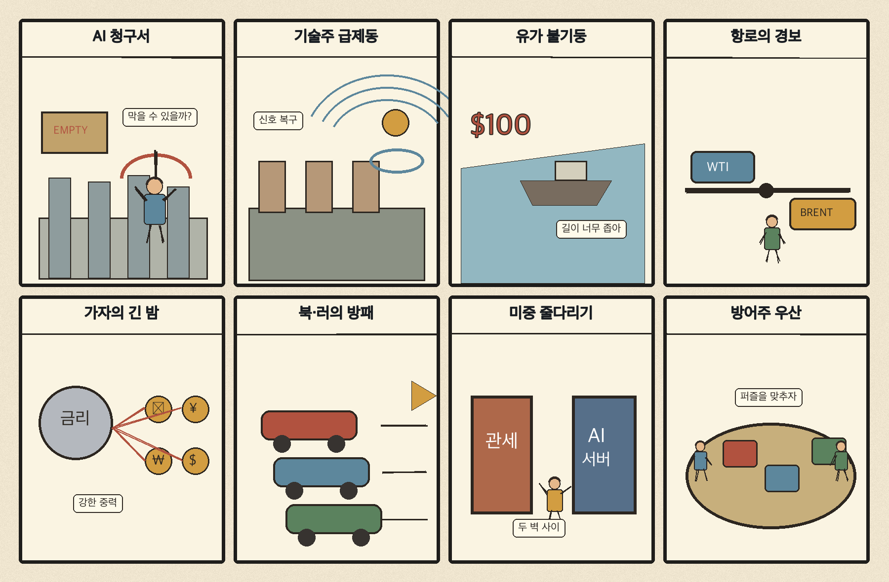
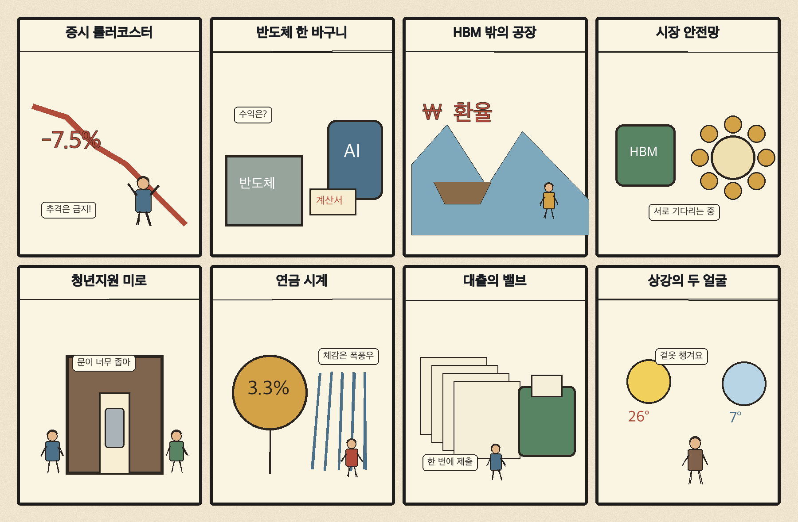

01
액센츄어 · 242.00→258.74달러 · +6.92%
내용요약 시가 대비 +6.92%로 조사 종목 중 상승 폭이 가장 컸습니다. 기술주 급락장에서도 기업 디지털 전환 서비스가 상대 강세를 보였습니다.
예상여파 국내 정보기술 서비스주는 방어적 수요 기대를 받을 수 있지만 개별 실적과 수주 확인이 우선입니다.
MORNING_BRIEFING_20261023
작성 시각: 2026-10-23 06:32 KST · 직전 미국 정규장과 2026-10-23 KST 당일 공개 기사 기준
직전 미국 정규장인 10월 22일 뉴욕증시는 다우 +0.02%, S&P 500 -1.21%, 나스닥 -2.60%로 기술주 중심의 약세였습니다. 인공지능 설비투자의 수익성 우려와 고유가가 성장주 부담을 키웠습니다. 전일 KOSPI도 -3.52% 하락한 만큼 오늘 한국 시장은 장전 반등 기대보다 반도체 대형주 수급, 원·달러 환율과 유가를 우선 확인해야 합니다.
| 지수 | 종가 | 등락률 | 한국 증시 시사점 |
|---|---|---|---|
| 다우존스 | 52,867.98 | +0.02% | 경기방어주 상대강도, 유가 부담 경계 |
| S&P 500 | 7,663.43 | -1.21% | 인공지능 투자 회의론과 기술주 변동성 확대 |
| 나스닥 종합 | 26,008.86 | -2.60% | 인공지능 투자 회의론과 기술주 변동성 확대 |
인공지능 투자 수익성 우려로 기술주 매도가 확대됐습니다.
전일 5,533.77로 마감했고 시가 대비로도 2.40% 내렸습니다.
후티의 사우디 공격으로 에너지·물가 위험이 다시 높아졌습니다.
다우는 보합권을 지키고 헬스케어·금융·유통 일부가 버텼습니다.
가장 최근 발행한 10월 21일 보고서는 급변동과 필수 수급·컨센서스·유사 조건 표본 부족으로 공식 추천을 내지 않았습니다. 10월 22일에는 보고서가 발행되지 않아 사후 종목을 추가하지 않습니다.
| 시장 | 종가 | 등락률 | 기준 |
|---|---|---|---|
| KOSPI | 5,533.77 | -3.52% | 10월 22일 · 시가 대비 -2.40% |
| KOSDAQ | 764.10 | -3.62% | 10월 22일 · 시가 대비 -3.26% |
| 다우존스 | 52,867.98 | +0.02% | 미국 10월 22일 정규장 |
| S&P 500 | 7,663.43 | -1.21% | 미국 10월 22일 정규장 |
| 나스닥 종합 | 26,008.86 | -2.60% | 미국 10월 22일 정규장 |
액센츄어가 시가 대비 +6.92%로 조사군 최상위였습니다.
홈디포 +4.42%, 넷플릭스 +3.07%, 월마트 +1.52%가 상대 강세였습니다.
ASML -4.04%, 마벨 -3.34%, AMD -3.00%로 기술주 매도가 집중됐습니다.
메타 -3.99%, 아마존 -3.00%, 마이크로소프트 -2.18%가 밀렸습니다.
내용요약 시가 대비 +6.92%로 조사 종목 중 상승 폭이 가장 컸습니다. 기술주 급락장에서도 기업 디지털 전환 서비스가 상대 강세를 보였습니다.
예상여파 국내 정보기술 서비스주는 방어적 수요 기대를 받을 수 있지만 개별 실적과 수주 확인이 우선입니다.
내용요약 시가 대비 +4.42%로 경기민감 소비주 중 강하게 반등했습니다.
예상여파 미국 주택·소비 심리의 단기 완충 신호지만 고금리와 유가 부담이 지속되는지 함께 봐야 합니다.
내용요약 시가 대비 +3.07%로 기술주 약세 속에서 미디어 플랫폼의 상대 강도가 두드러졌습니다.
예상여파 콘텐츠 플랫폼은 광고·구독 실적에 따라 인공지능 인프라주와 다른 흐름을 보일 수 있습니다.
내용요약 시가 대비 -4.04%로 반도체 장비주 매도가 컸습니다. 인공지능 투자 회의론이 장비 밸류체인으로 번졌습니다.
예상여파 국내 반도체 장비·소재주에는 심리적 부담이며 장전 낙폭만 보고 저가 매수하는 전략은 경계해야 합니다.
내용요약 시가 대비 -3.99%로 하락했습니다. 대규모 인공지능 지출 계약과 투자 수익성 논쟁이 부담으로 작용했습니다.
예상여파 빅테크 설비투자 축소 우려가 커지면 데이터센터·서버·광고 생태계 전반의 실적 눈높이가 낮아질 수 있습니다.
나스닥 -2.60%, ASML -4.04%, 메타 -3.99%는 국내 반도체·인공지능 성장주의 시초가와 위험선호에 부정적입니다. 후티 공격 뒤 브렌트유 급등은 항공·화학·운송의 비용 부담을 높이는 반면 정유·방산에는 단기 관심을 만들 수 있습니다. 그러나 전일 KOSPI와 KOSDAQ이 각각 -3.52%, -3.62% 하락한 고변동 국면이므로 업종 연결만으로 추격하지 말고 외국인 현·선물 수급과 시가 회복을 확인합니다.
오늘은 추천 없음 — 현금 관망
한국 증시가 전일 급락했고 미국 기술주와 반도체 장비주도 동반 하락했습니다. 전일까지의 외국인·기관 수급, 컨센서스 변화와 30건 이상 유사 조건 표본을 함께 확보해 종합점수 75점·상승확률 60%·예상 손익비 1.5를 모두 검증한 종목이 없습니다.
관심 연결종목 정유·방산·정보기술 서비스는 뉴스와 미국 상대강도에 따른 관찰 대상일 뿐 매수 추천이 아닙니다. 장전 급등 또는 갭 상승 종목의 추격매수를 금지합니다.
나스닥·ASML 급락을 국내 대형주가 얼마나 반영하는지 확인합니다.
중동 공격 이후 추가 상승과 운송·화학 비용 반응을 봅니다.
위험회피 속 환율 상승과 현·선물 동반 매도 여부가 핵심입니다.
서울 아침 5.2도, 남부·제주 비와 강풍에 대비합니다.
핵심 요약: 인공지능 산업의 초점이 투자 규모에서 수익성으로 이동하며 기술주 조정이 커졌습니다. HBM과 성숙공정의 공급 연결, 한·일 로봇 협력, 인공지능 보안 계약의 실제 매출 전환을 함께 확인해야 합니다.
내용요약 인공지능 투자 수익성 우려가 커지며 나스닥이 2.6% 급락하고 성장주에서 방어주로 자금이 이동했다는 시장 보도입니다.
예상여파 대규모 설비투자가 매출과 현금흐름으로 이어지는 속도가 핵심이 되면서 국내 인공지능·반도체주도 밸류에이션 압력을 받을 수 있습니다.
내용요약 HBM 경쟁에서 뒤처졌던 삼성전자가 실적 회복 기대를 키우며 반도체 사업의 재도약을 모색한다는 보도입니다.
예상여파 HBM 고객 인증과 출하 확대가 현실화되는지가 국내 메모리 공급망과 관련 장비주의 방향을 가를 수 있습니다.
내용요약 HBM 호황이 성숙공정의 공급 부족과 가격 인상으로 번지며 대만 파워칩의 수익성이 개선됐다는 보도입니다.
예상여파 인공지능 수요의 파급이 첨단 메모리를 넘어 범용 반도체로 확산될 가능성이 있지만 가격 상승 지속성과 최종 수요를 함께 봐야 합니다.
내용요약 한국과 일본이 인공지능·로봇·첨단소재 분야의 지역기업 교류와 협력을 확대한다는 당일 보도입니다.
예상여파 공동 실증과 공급망 협력이 실제 계약으로 이어지면 중소 기술기업의 해외 진출 통로가 넓어질 수 있습니다.
내용요약 크라우드스트라이크가 엔비디아와 인공지능 보안 협력을 확대했다는 해외 시장 보도입니다.
예상여파 에이전트와 데이터센터 확산으로 보안 수요가 커질 수 있지만 단기 주가 반응보다 계약의 매출 전환을 확인해야 합니다.
핵심 요약: 후티의 사우디 공격과 가자 긴장이 에너지·안보 위험을 키웠고, 미중 경쟁과 북·러 사이버 협력이 공급망·보안 진영화를 재촉하고 있습니다. 고유가와 인공지능 투자 회의론이 세계 금융시장에 동시에 부담을 주는 하루입니다.
내용요약 후티의 사우디 공격으로 중동 공급 차질 우려가 커지며 브렌트유가 5개월 만의 최고 수준으로 급등했다는 보도입니다.
예상여파 고유가는 항공·화학·운송의 비용 부담을 높이고 물가와 금리 인하 기대를 동시에 압박할 수 있습니다.
내용요약 가자시 서부에서 드론 공격으로 팔레스타인 사상자가 발생했다는 당일 국제 보도입니다.
예상여파 휴전과 인도주의 협상의 불확실성이 커지면 중동 위험 프리미엄과 주변국 안보 부담이 장기화될 수 있습니다.
내용요약 미중 패권 경쟁이 격화되는 가운데 한국의 외교·경제안보 전략을 다룬 보도입니다.
예상여파 반도체·배터리·조선 공급망에서 선택 압력이 커질 수 있어 시장 접근과 기술 통제의 균형이 중요해집니다.
내용요약 북한과 러시아가 사이버범죄 대응 협력에 합의해 국제사회의 우려가 제기됐다는 보도입니다.
예상여파 사이버 규범을 둘러싼 진영화가 심해지면 금융·공공 인프라의 보안 투자와 국제 공조 부담이 커질 수 있습니다.
내용요약 메타의 대규모 지출 계약과 인공지능 투자 부담이 기술주 급락, 고유가와 맞물렸다는 국제금융 보도입니다.
예상여파 인공지능 자본지출의 수익성 논쟁이 미국 기술주뿐 아니라 세계 증시의 위험선호를 흔드는 핵심 변수가 됐습니다.

핵심 요약: 증시 변동성이 커진 가운데 반도체 수출 집중, 가계대출 규제, 분산된 청년 지원이 한국 경제의 구조적 과제로 부각됐습니다. 생활 측면에서는 상강 아침 추위와 남부·제주 비에 대비해야 합니다.
내용요약 대만 증시의 시장 안정 장치 사례를 짚으며 변동성이 큰 한국 증시와 비교한 당일 분석입니다.
예상여파 정책 기대만으로 방향을 단정하기보다 시장 구조와 실제 수급 안정 효과를 구분해 볼 필요가 있습니다.
내용요약 한국 수출에서 반도체 비중이 45%에 육박해 가격 변동이 전체 수출액에 큰 영향을 준다는 보도입니다.
예상여파 반도체 호황은 성장률을 끌어올리지만 품목 집중도가 높을수록 업황 반전 때 경제 변동성도 커질 수 있습니다.
내용요약 금융당국이 가계대출 총량 규제를 유지하면서 운영 방식의 개선 가능성을 시사했다는 보도입니다.
예상여파 실수요 보완과 부채 억제의 균형에 따라 은행 대출 문턱과 주택시장 심리가 달라질 수 있습니다.
내용요약 청년 지원이 월세·일자리 등 기관별로 분산돼 이용자가 여러 창구를 찾아야 하는 문제를 다룬 보도입니다.
예상여파 통합 안내와 전달체계 개선이 없으면 예산이 늘어도 정책 체감도와 실제 수혜율이 낮을 수 있습니다.
내용요약 서울 아침 기온이 5.2도로 올가을 최저를 기록했고 강원 일부에는 첫 얼음이 관측됐다는 예보입니다.
예상여파 큰 일교차와 남부·제주 비에 대비해 출근길 보온, 농작물 냉해와 교통 안전을 챙길 필요가 있습니다.
